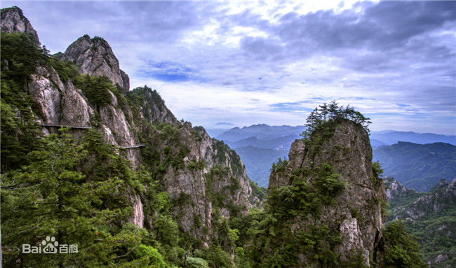

| 洛阳 luoyang | |||||||||||||||||||
| 老君山 | |||||||||||||||||||
| 洛阳老君山（本名景室山），道教主流全真派圣地，位于河南省洛阳市栾川县城东南三公里处，老君山是秦岭余脉八百里伏牛山的主峰，海拔高达2200余米。被道教尊称为太上老君的李耳（即老子）曾在此山修炼，唐太宗因此将景室山改名为老君山。老君山自北魏以来，是周边各郡香客朝拜要地，其山顶的太清观也是始建于北魏。老君山是国家AAAAA级景区、国家级自然保护区、世界地质公园、国家地质公园，是秦岭余脉八百里伏牛山的主峰，海拔2217米。 | |||||||||||||||||||
| 主要景点： 老君山景观区6处、有景点179个、太清宫、十方院、灵官殿、淋醋殿、牧羊圈、救苦殿、传经楼、观音殿、三清殿、老君庙等庙宇16处。 |  | ||||||||||||||||||
| 人文 | |||||||||||||||||||
| 老君山因太上老君李耳在此归隐修炼而得名，具有2000多年的悠久道教文化历史。 老子写成《道德经》后，就告别函谷关的关令尹喜，骑着青牛而去，《史记》记载：“莫知其所终”。据文字记载，老子归隐于洛阳景室山，即老君山。因此老子文化和道家文化深深地影响着老君山地区，老君山也成为中原山水文化的杰出代表。老君庙、灵官殿、淋醋殿、道德府等庙宇，古朴凝重，香火炽盛，一直是中国北方各省道教信众的拜谒圣地。 | |||||||||||||||||||